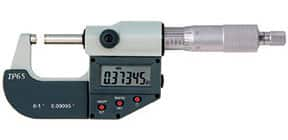
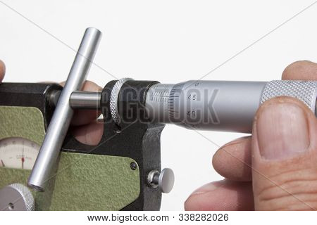

Micrometer calibration using gage block
Contents
Micrometer calibration using gage block#
A Federal Grade 2 accuracy gage block is used to calibrate the measurements of a micrometer. A gage block is a calibration standard for thickness measurement, it is a block of material, steel in this case, machined to a very high accuracy of thickness.
A Federal Grade 2 accuracy gage block is used, it meets certain tolerances for length, flatness and parallelism. Read more on https://www.nist.gov/system/files/documents/calibrations/mono180.pdf
The calibrated accuracy of the micrometer can be no greater than the total error of this standard accuracy.
The total error \(e_{\text{calibration}}\) from the calibration will be the root sum of the squares (RSS) of the bias and precision errors.
from IPython.display import Image
# Image('https://www.higherprecision.com/images/blog_images/higherprecision_gageblocks.jpg',width=500)
Image('https://cdn.mscdirect.com/global/media/images/tech-essentials/outside-micrometer.jpg')

import numpy as np
We performed multiple measurements and checked that the histogram is close to normal distribution#
Image('https://www.mathsisfun.com/data/images/histogram.gif')
<IPython.core.display.Image object>
N = 40 # 40 measurements
mean_x = 0.12621 # inch
s_x = 0.000146317 # inch
t_39_95 = 2.02268893 # t-statistic for N-1 degrees of freedom
true_x = 0.12620 # inch - true value for calibration
\[ e_{\text{bias}} = | \overline{x} - x_{\text{true}} | \]
# bias error
e_bias = np.abs(mean_x - true_x)
print(f"Bias error = {e_bias:g} inch")
Bias error = 1e-05 inch
\[ e_{\text{precision}} = t_{39,95\%} \frac{S_x}{\sqrt{N}} \]
# precision error
e_precision = t_39_95*s_x/np.sqrt(N)
print(f"Precision error = {e_precision:g} inch")
Precision error = 4.67944e-05 inch
\[ e_{\text{resolution}} = \frac{1}{2} \text{resolution} \]
# micrometer resolution
resolution = 0.00005 # inch
e_resolution = resolution/2
print(f"Resolution error = {e_resolution:g} inch")
Resolution error = 2.5e-05 inch
Standard gage blocks are not ideal, they have known tolerances and errors#
\[ e_{\text{standard, total}} = \sqrt{e_{\text{standard},L}^2 + e_{\text{standard},\perp}^2 e_{\text{standard},\parallel}^2 } \]
# Manufacturer supplied information about the gage
# accuracy. We have chosen only grade 2 accuracy ( higher more expensive )
e_standard_length = 4e-6 # inch
e_standard_flattness = 4e-6 # inch
e_standard_parallelism = 4e-6 # inch
e_standard_total = np.sqrt(e_standard_length**2 + e_standard_flattness**2 + e_standard_parallelism**2)
print(f"standard gage grade 2 error = {e_standard_total:g} inch")
standard gage grade 2 error = 6.9282e-06 inch
\[ \large{e_{\text{calibration, total}} = \sqrt{e_{\text{bias}}^2 + e_{\text{precision}}^2 + e_{\text{standard, total}}^2 + e_{\text{resolution}}^2 } }\]
# note that even if we'd use an ideal measurement system with e = 0
# we will never get the true value as there uncertainty of the standard gage block itself
# note that standard gage block uncertainty is smaller than other values
# otherwise you need to choose a better grade of the gage block
e_calibration_total = np.sqrt(e_bias**2 + e_precision**2 + e_standard_total**2 + e_resolution**2)
print(f"Calibration error = {e_calibration_total:g} inch")
Calibration error = 5.44308e-05 inch
Accuracy is mesured relative to the true value#
\[ \text{accuracy} = 1 - \frac{e_{\text{calibration,total}}}{x_{\text{true}} } \times 100\% \]
# our accuracy measure is
accuracy = (1 - e_calibration_total/true_x)
print(f"Accuracy (relative) = {accuracy*100:.3f} %")
Accuracy (relative) = 99.957 %
# from this moment and on we can use the micrometer, but we have to use its # calibration error as a bias error for all the measurements
# remember that it already includes the resolution error, so don't repeat it.
Second half: use the calibrated micrometer to measure the diameter of a cylinder#
Image('https://static1.bigstockphoto.com/8/3/3/large2/338282026.jpg')

d_mean = 0.32512 # inch
N = 40
s_d = 0.0003 # inch
from scipy.stats import t as student_t
# for the 95 confidence level
confidence_level = 0.95 # 95%
alpha = 1 - confidence_level
degrees_of_freedom = N - 1
t_value = student_t.ppf(1-alpha/2.0, degrees_of_freedom)
print(f"t value = {t_value}")
t value = 2.022690911734728
Confidence interval of the diameter measurement is:#
\[ e_{d,\,\text{cylinder}} = \sqrt{e_{\text{calibration, total}}^2 + \left(t_{39,95\%} \frac{S_x}{\sqrt{N}} \right)^2 } \]
e_cylinder = np.sqrt( e_calibration_total**2 + t_value*s_d/np.sqrt(N))
print(f"e_cylinder = {e_cylinder:g} inch with 95% probability")
e_cylinder = 0.00979529 inch with 95% probability
e_cylinder/2
0.004897642723035386
Cylinder diameter is#
\[ d_{\text{cylinder}} = 0.325 \pm 0.00489 \;\text{inch} \]